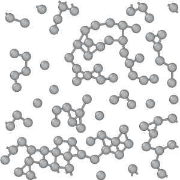
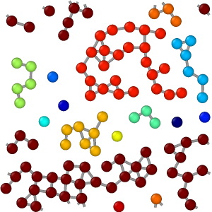

| Table of Contents | Cluster analysis | Up |
|---|---|---|
| Prev | Modifiers | Next |
| Table of Contents | Cluster analysis | Up |
|---|---|---|
| Prev | Modifiers | Next |
| Input: | Output: |
|

|

|
This modifier decomposes the particles into disconnected groups (so-called clusters) based on the selected neighboring criterion. The neighboring criterion can be distance-based (cutoff range) or topology-based (bond network).
A cluster is defined as a set of connected particles, each of which is within the (indirect) reach of the other particles in the same cluster. Thus, any two particles from the same cluster are connected by a continuous path consisting of steps that fulfill the selected neighboring criterion. Conversely, two particles will belong to different clusters if there is no such continuous path connecting the two particles on the neighbor graph.
You can choose between two clustering modes: In case of the distance-based mode, two particles are considered connected if they are within a specified proximity range of each other. In case of the bond-based mode, two particles are considered connected if there exists a bond between them. Note that particles not connected to any other particle will each form a single-particle cluster by itself.
The clusters identified by the modifier are numbered from 1 to N, the total number of clusters.
The algorithm assigns each input particle to one of these clusters and outputs this information as a new particle property named Cluster.
Note that the ordering of clusters is arbitrary by default and will generally depend on the storage order of input particles.
You can, however, activate the Sort clusters by size option to request the sorting of cluster IDs by descending particle count.
This option guarantees that the first cluster (ID 1) will be the largest one in the system, i.e. the one consisting of the largest number of particles.
The modifier provides the option to compute the center of mass of each cluster. The coordinates will be output as an additional column
in the generated clusters table (see below). The center of mass of clusters cut by a periodic simulation
cell boundary will be correctly computed. However, if the extent of a cluster is infinite in the sense that it reconnects to itself through the periodic
boundaries of the simulation domain, the results will be undefined.
Since program release 3.2, OVITO takes into account the individual particle masses when calculting the center of mass.
The mass information will be taken from the Mass property of individual particles (if present) or
from the mass value set for each particle type. If neither the Mass particle property is present
nor at least one particle type with a positive mass, then the algorithm assumes that all particles to have the same uniform weight.
Furthermore, the modifier can compute the radius of gyration of each cluster as well as the gyration tensor. Both quantities will appear as additional columns in the generated table of clusters. The symmetric gyration tensor has six independent components: xx, yy, zz, xy, xz, yz (in simulation units of length squared). The data table is accessible in the data inspector panel:
The calculation of the radius of gyration and the gyration tensor in OVITO follows the compute gyration command found in the LAMMPS simulation code. It takes into account the individual particle masses (if present) or the masses assigned to the particle types (if present).
The modifier provides the option to "unwrap" the coordinates of particles belonging to the same cluster, mapping them from inside the periodic simulation domain to outside in order for the cluster to appear as a contiguous object. Note that the unwrapping will yield meaningful results only for finite clusters. It will lead to undefined results for infinite clusters that are connected to themselves through a periodic cell boundary.
The modifier option Color particles by cluster gives each identified cluster a unique random color and colors the particles according to the clusters they belong to. It can be used to quickly visualize the results of the clustering algorithm.
The option Use only selected particles restricts the clustering algorithm to the set of currently selected particles. Unselected particles will be treated as if they do not exist and will be assigned the special cluster ID 0.
To export the total number of clusters found by the modifier to a text file (possibly as a function of time),
use OVITO's standard file export function. Choose "Table of values"
as output format and make sure that the ClusterAnalysis.cluster_count global attribute is selected for export.
The modifier also outputs the global attribute ClusterAnalysis.largest_size to report
the number of particles in the largest cluster (only if the sort-by-size option is used). This information can be
exported from OVITO in the same way as explained above.
To export the list of particles belonging to each cluster to a text file, use OVITO's
file export function. Choose the XYZ output file format
and select the Particle Identifier and the Cluster properties for export.
This will yield a text file containing each particle's cluster ID.
The modifiers outputs the list of identified clusters as a data table, which consists of one row per cluster and columns for the cluster size (number of particles), center of mass and radius of gyration (if their calculation is enabled). You can open this table in the data inspector panel of OVITO by pressing the button of the modifier. The data inspector panel provides a function for exporting the table data to a text file.
Since the cluster table generated by the modifier contains each cluster's size,
you can subsequently apply OVITO's Histogram modifier to the Cluster Size
column of that table to calculate the cluster size distribution.